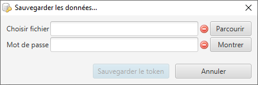

Il est vivement recommendé de faire des sauvegardes régulières. Les sauvegardes permettent de restaurer vos donnés quand (par exemple) vous perdez ou bloquez votre clé. Les fichiers de sauvegarde peuvent être utilisés lors de la phase d'initialisation sur un token vide.
Sélectionez l'endroit où enregistrer la sauvegarde et entrez le mot de passe qui protègera le fichier par chifrement. Après avoir cliqué sur le bouton 'Sauvegarder', attendre le message 'Données sauvegardées !' avant de fermer la fenêtre.